Usando un evento con ejecución automática, crearemos un evento de dos páginas que reciba al jugador con un cuadro de texto al llegar a la segunda área.
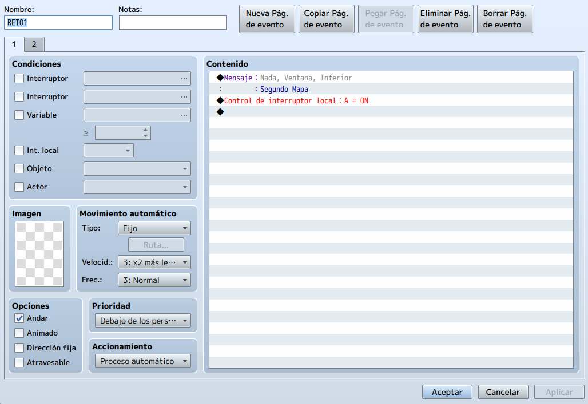
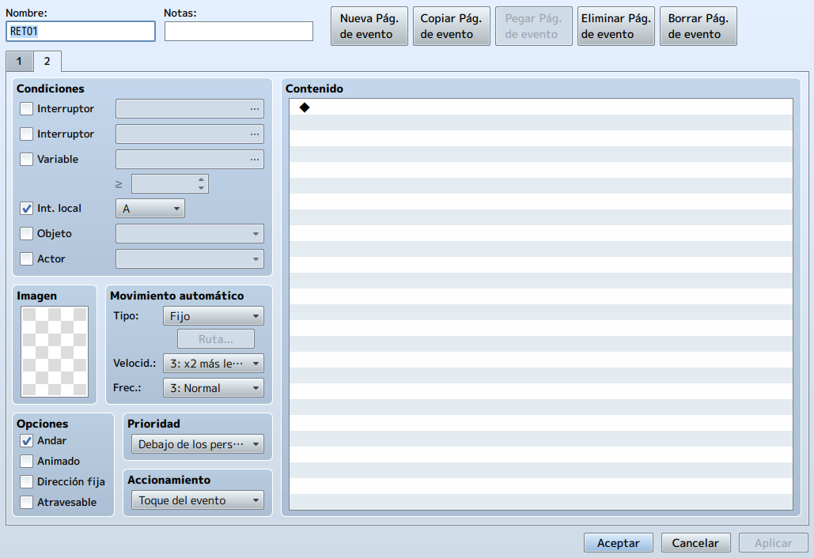
Usando un evento con ejecución automática, usaremos los comandos de evento Fadeout y Fadein (Iniciar Transición y Finalizar transición) para hacer que la pantalla se apague momentáneamente y luego revele el cofre del tesoro, en lugar de que aparezca inmediatamente.
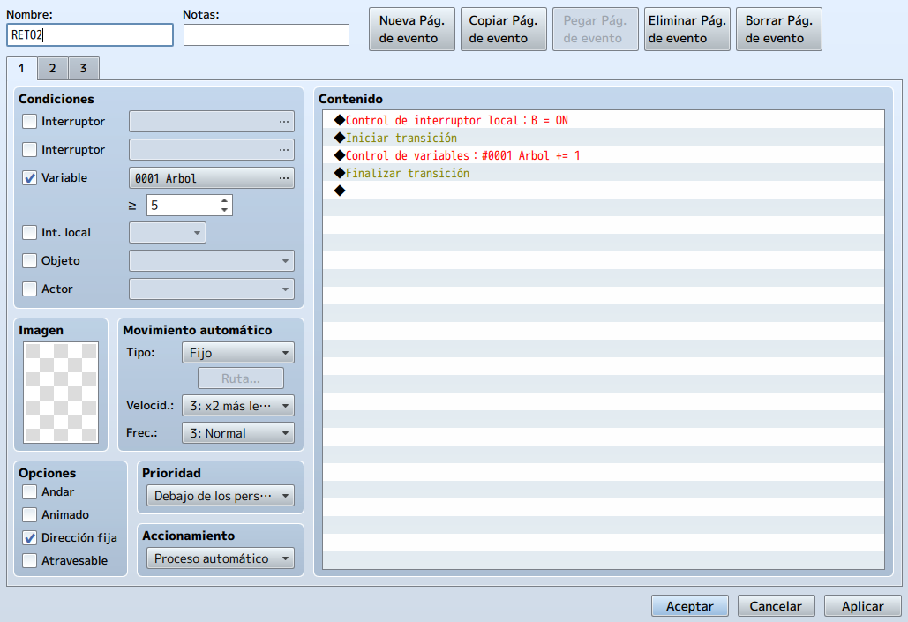
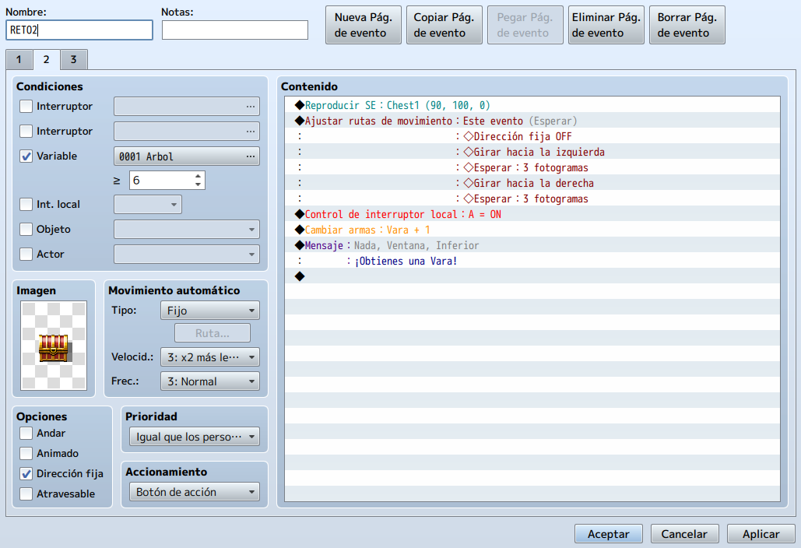
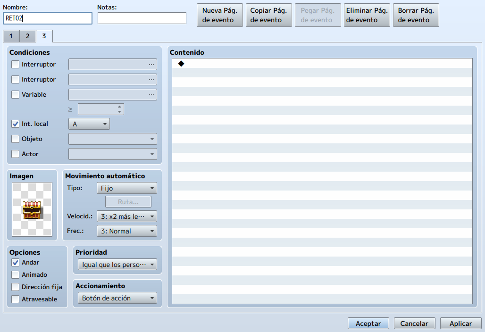
Modificaremos los eventos de los cinco árboles para que también muestren un cuadro de texto que les diga a los jugadores cuántos árboles ha mirado hasta ese momento.
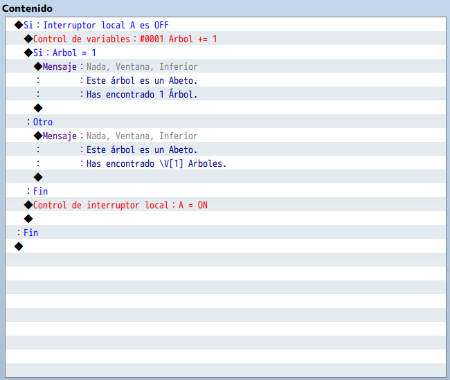
Cambia a Harold para que pueda usar tanto arcos como espadas.
Para hacer esto, puedes agregar la característica Equipar tipo de arma (Arco) para Harold o
su clase (Héroe), y tendrá el mismo efecto general para nuestros propósitos. Hemos elegido agregarlo a su
clase.
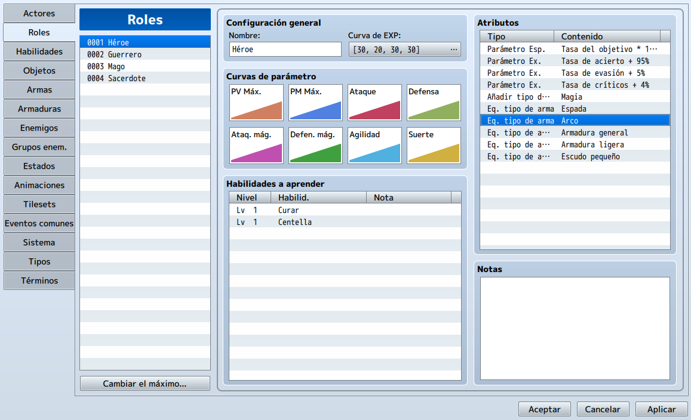
Aumenta la pestaña de Habilidades como máximo a 40 y crea una habilidad en el espacio 11 que requiera el uso
de un arco.
Haremos una nueva habilidad que llamaremos "Flecha Centella". Es del tipo de habilidad mágica y cuesta 10 PM
por uso. Tiene un alcance de 1 enemigo y solo se puede usar en batalla. Su tipo de golpe es Ataque mágico,
mientras que su animación es Flecha especialñ. Lo configuramos para que requiriera el uso de un arco.
Para la fórmula de daño de la habilidad, usaremos [( a.atk * 4 - b.def * 2) + (a.mat * 2 - b.mdf * 2)].
Hemos empalmado las fórmulas de daño de Ataque y Centella sin los 100 de daño de Centella). Hace Daño de PV, de
elemento Rayo con una variación del 10% y puede infligir golpes críticos. No tiene efectos especiales.
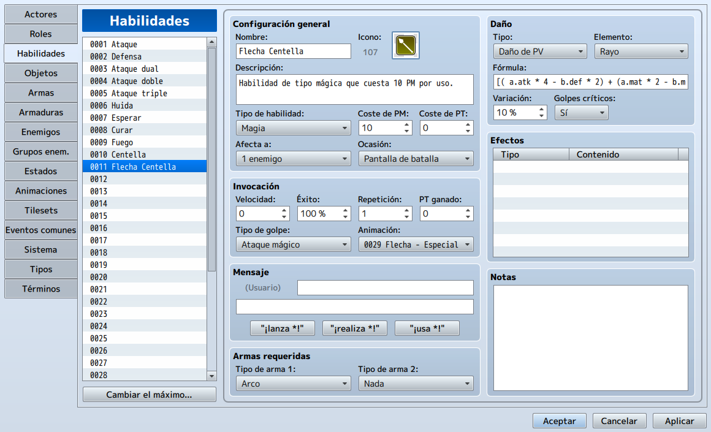
Dale a Harold la habilidad que has creado.
Para agregar una habilidad a un Rol, hacemos doble click con el botón izquierdo (o hacemos click con el
botón derecho y luego seleccione Editar) dentro de la lista de Habilidades de ese Rol. Puedes hacer lo mismo
en una habilidad ya agregada, para editarla o borrarla.
Como queremos agregar la nueva habilidad, la añadiremos al espacio en blanco directamente debajo de Centella.
Para este reto, establezcamos el nivel en el que aprender nuestra habilidad con el arco en 1. Eso significa
que Harold tendrá esa habilidad con el arco desde el comienzo del juego.
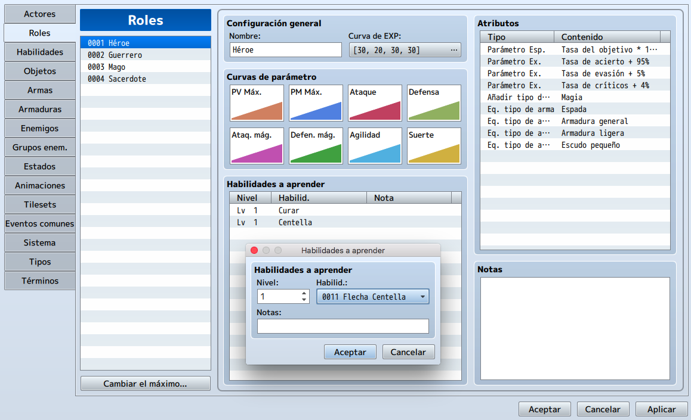
Aumenta la pestaña de Objetos como máximo a 40. Crea un objeto normal que se pueda usar para atacar enemigos
y se consuma con el uso y un objeto clave.
El objeto que crearemos será una bomba. Hará exactamente 50 de daño físico a todos los enemigos cuando se usa
(puede escribir números en la fórmula de daño). Se consume cuando se usa y cuesta 100 de oro comprar en una
tienda (lo que significa que se vende por 50 de oro). Tiene un tipo de golpe físico y la animación de Disparo
todos.
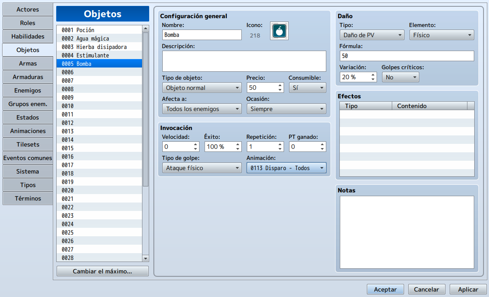
El Objeto clave que crearemos será una llave antigua. No tiene precio, no se puede consumir y puede afectar a
Nada y una ocasión de Nunca.
Un elemento de este tipo parece inútil a primera vista, pero se puede utilizar junto con el elemento
condicional. Se utiliza principalmente para eventos que involucran puertas o portones cerrados, para permitir
a los jugadores abrirlos, si tienen el elemento clave apropiado.
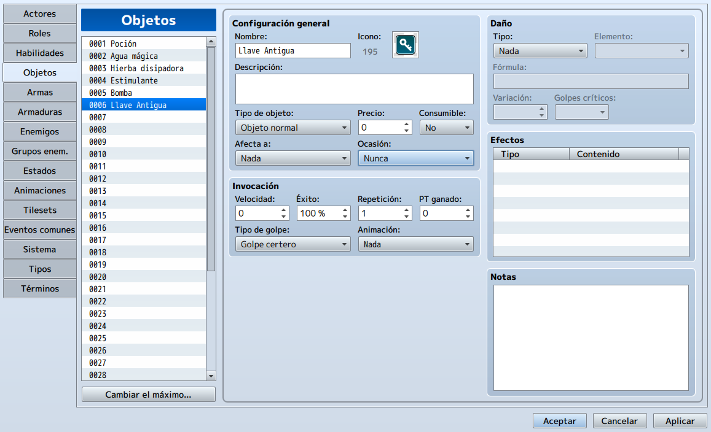
Aumente la pestaña de Armas como máximo a 40 y crea un arco para que lo use Harold.
Crearemos un nuevo arco llamado Arco de Harold y le daremos un valor de ataque de 20.
No tiene valor, por lo que no se puede vender, y tiene la animación Puñalada Físico. Tiene los siguientes
rasgos:
• Hace daño físico.
• Otorga una bonificación del 5% de tasa de acierto a su portador.
• Evita que se usen escudos (mediante el uso del rasgo Sellar equipo) al mismo tiempo que el arco.
• Otorga una bonificación del 5% a la tasa crítica del portador.
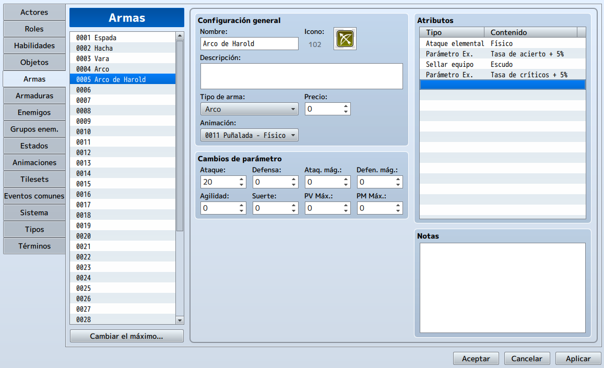
Nota: Este es el arco de Harold. ¿Qué impide que otro usuario de arco use este arco? La forma más fácil de crear un arma que solo un determinado personaje puede usar es crear un tipo de arma completamente nuevo para ese personaje. Podrías llamar al nuevo tipo de arma ArcoH (abreviatura de "Arco de Harold") y luego permitir que Harold use armas del tipo ArcoH.
Aumenta la tabla de enemigos como máximo a 40 y crea un nuevo enemigo.
Haremos un nuevo enemigo llamado Orco de Guerra. A la imagen, le daremos un Tono de 190 para darle al gráfico
Orco un tinte azulado. Usar el Tono es muy recomendable para tener enemigos de distintos colores. En lugar
de cambiar el color del sprite manualmente varias veces, podemos tener un solo sprite y modificarlo con el
Tono dentro de RMMV.
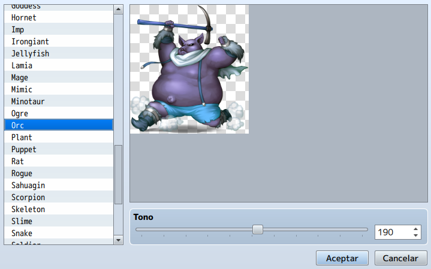
Le daremos 250 de PV Max., 30 de Ataque, 15 de Defensa, 15 de Ataque Mágico, 15 de Defensa Mágica, 25 de
Agilidad y 25 de Suerte.
El Orco de Guerra otorga 33 de EXP. y 50 de Dinero cuando es derrotado y tiene una probabilidad de 1/8 de
lanzar una bomba.
En cuanto a los atributos, tiene una tasa de acierto del 95%, un 5% de evasión y daño físico para sus ataques
normales. Su patrón de ataque consiste únicamente en atacar normalmente.
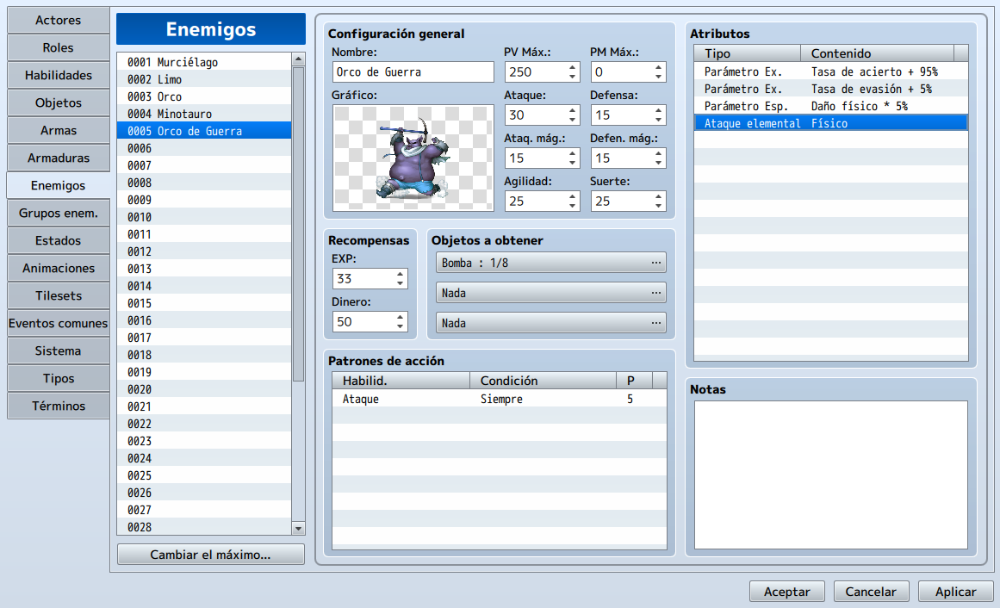
Nota: Hay un método para el aparente caos de esta definicióin de monstruo. Por ahora, hay que tener en cuenta que el Orco de Guerra representa un arquetipo de monstruo; en lugar de tener estadísticas equilibradas, tiene un ataque más fuerte a expensas de sus estadísticas defensivas.
Nota: El ataque es inútil contra enemigos que no usan Magia. Del mismo modo, si alguna vez se hace un enemigo que solo usa Magia, su estadística de Ataque servirá igualmente de poco.
Aumenta la pestaña de Grupos de enemigos como máximo a 40 y crea un Grupo de enemigos que contenga un Slime
y uno de los nuevos enemigos que crees.
Marcaremos de la lista de la derecha el Limo (Slime) y hacemos click en Añadir. Luego, marcaremos el enemigo
que creamos anteriormente y repetiremos la acción.
Podemos nombrar manualmente el Grupo de enemigos o utilizar Nombre automático.
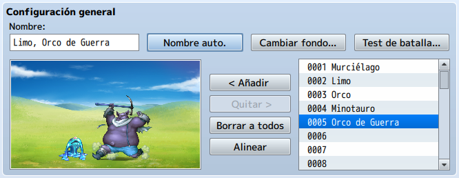
Ahora tenemos varias cosas que hacer para que el juego sea un poco más único.
Primero, vamos a editar el cofre del tesoro del segundo mapa para que le dé a Harold el nuevo arco que
creamos anteriormente, en lugar de la vara.
Una vez hecho esto, agreguemos el nuevo grupo de enemigos al mapa.
Para agregar el nuevo Grupo de enemigos al mapa, tendremos que ir a las Propiedades del segundo mapa
haciendo click derecho en su nombre en la pantalla del mapa y seleccionando Editar. No hemos rellenado la
zona de Encuentros aún, pero son plug-and-play. Básicamente, si interactuamos (como de costumbre) con la
lista actualmente vacía, obtendremos las siguientes opciones:
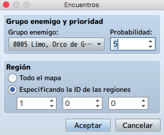
Grupo de enemigos es un menú desplegable que te permite seleccionar qué Grupo de enemigos deseamos agregar a
la tabla de encuentros. En este caso elegiremos el nuevo Grupo que hemos creado.
La Probabilidad, determina la frecuencia con la que aparece el encuentro. Debido a que solo tenemos un
encuentro, el valor real de Probabilidad no es importante. Cuando tienes varios encuentros, la probabilidad
de encontrar un Grupo de enemigos en particular es igual a Probabilidad del Grupo ÷ Probabilidad total.
Entonces, si tuviéramos tres grupos de enemigos con el mismo peso, la posibilidad de encontrarnos con cada
grupo sería de 1 de 3 (33%).
La Región especifica si el Grupo de enemigos se puede encontrar en cualquier lugar del mapa o si su
ausencia/presencia está determinada por una Región en particular (ya veremos más adelante lo que son las
regiones)
Hagamos que nuestro Grupo de enemigos solo tenga la oportunidad de aparecer en la Región 1. Haremos click en
Especificando la ID de las regiones y veremos que los tres cuadros numéricos se iluminan. Podemos
especificar hasta tres regiones en las que se puede encontrar ese grupo de enemigos en el mapa actual.
Escribamos un 1 en el primer cuadro.
Nota: En la Configuración General del mapa, Pasos determina la cantidad promedio de pasos que el jugador debe hacer para encontrar grupos de enemigos dentro de las áreas apropiadas. El valor predeterminado es 30.
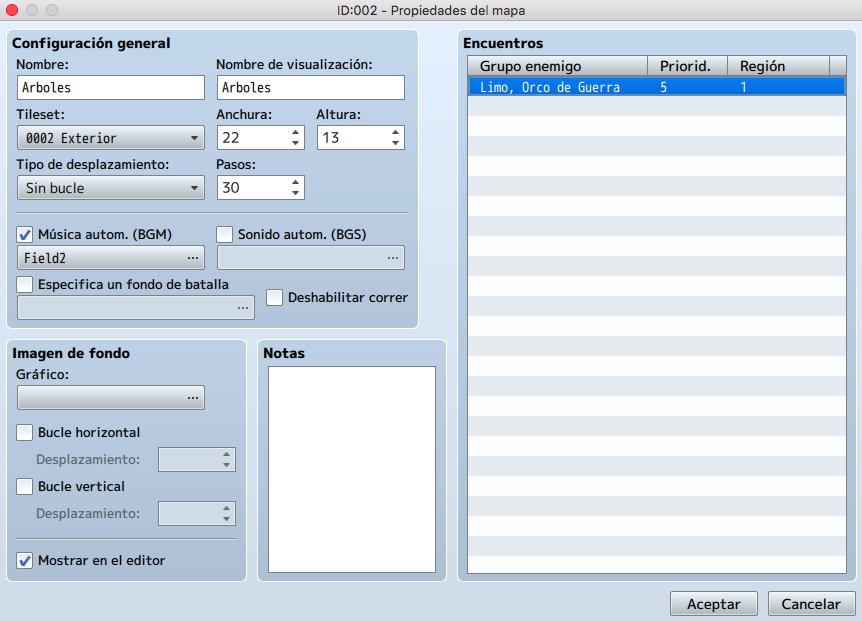
Haz un grupo de enemigos con un solo monstruo que diga algunas palabras antes de morir.
La muerte (aplicada automáticamente a través del estado Muerte cuando un enemigo o actor no tiene PV) tiene
prioridad sobre cualquier otra consideración en la batalla, por lo que tendremos que hacer que el enemigo sea
inmortal (hay un estado predeterminado en RMMV que cubre exactamente eso), tiene un condicional que se activa
cuando el monstruo cae al 0% de PV, hacer que el monstruo diga sus palabras y luego elimine el estado
Inmortal, para que la secuencia de muerte pueda activarse.
Este evento de grupo de enemigos se puede realizar con dos páginas de eventos.
La primera debe tener un turno 0 en la Condición y un Lapso de batalla (ya que solo queremos que este evento
se ejecute una vez por batalla). Puedes usar el comando de evento Cambiar estado del enemigo para establecer
el estado Inmortal del monstruo.
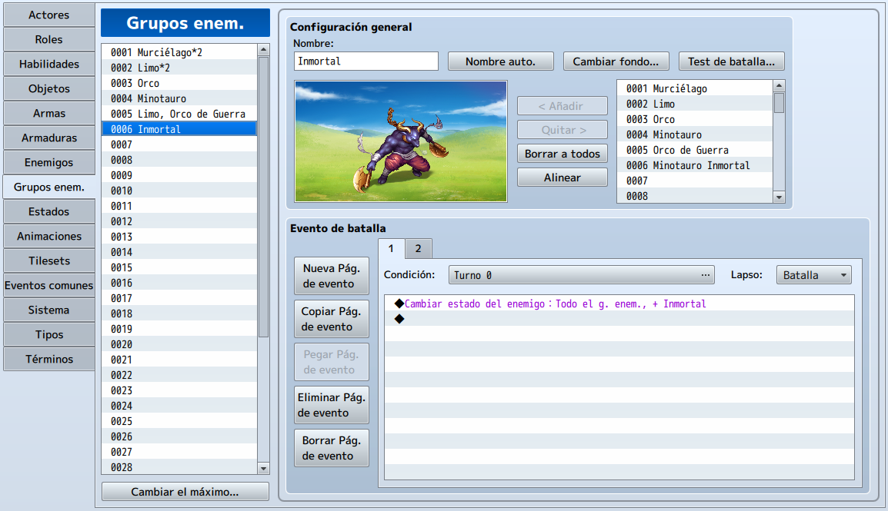
La segunda página del evento para este ejercicio debe tener una condición de PV del enemigo <= 0% y un Lapso de batalla. Debido a que se prioriza la muerte, el monstruo debe decir sus palabras antes de eliminar el estado.
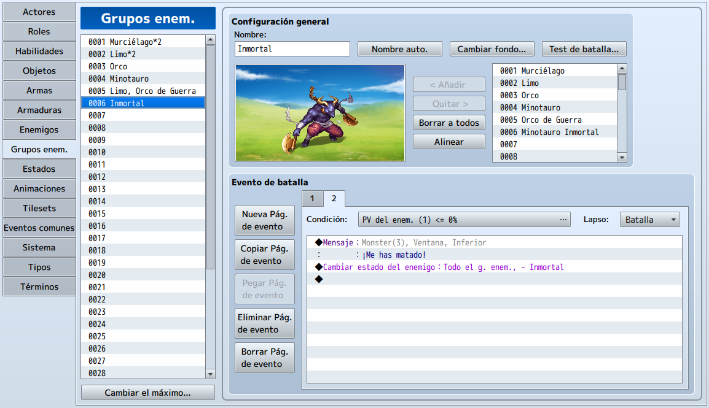
Por último, crearemos el evento de Procesar batalla en el lugar del mapa en el que queramos luchar contra nuestro enemigo.
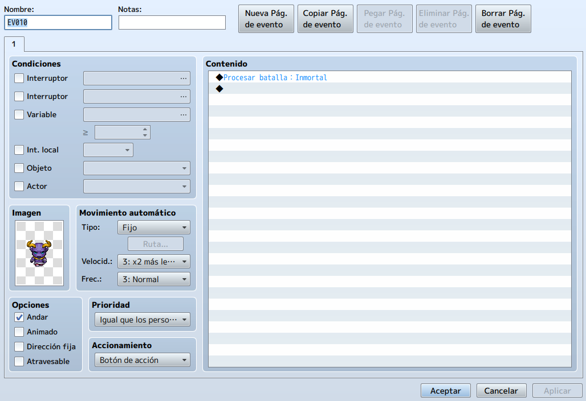
Crea un enemigo con tres habilidades diferentes (incluida la habilidad de ataque normal). Tener una de las
habilidades requerirá que el enemigo esté en un estado determinado para usarla, y otra de sus habilidades
otorgará este estado.
Puedes encontrar el ejemplo de habilidad en el espacio de Habilidad #255 y el ejemplo de enemigo en el
espacio de Enemigo #255.
Crea un enemigo que use una sola habilidad en una cuenta regresiva de tres turnos.
Quizás la mejor manera de hacerlo dentro de los límites de RMMV es crear una "habilidad" para cada turno de
cuenta regresiva, como lo hicimos para el patrón de ataque del jefe que ya vimos. Si observamos el cuadro de
mensaje de una habilidad, veremos que tiene dos líneas. En la línea 1, puede escribir “Está cargando un
ataque enormemente poderoso” y en la línea 2, puede escribir el número apropiado (3, 2 o 1).
Recordando todo sobre las calificaciones y los usos condicionales de las habilidades, también podemos hacer
que el monstruo use un patrón de ataque normal que cambia a la cuenta regresiva cuando el monstruo tiene la
mitad de PV o menos.
Puedes encontrar los nuevos ejemplos de habilidades en los espacios de Habilidad #251 a #254 y el ejemplo de
enemigo en el espacio Enemigo #254. Puedes encontrar también al enemigo en el espacio de Grupo de enemigos
de ejemplo #254.
Crea una fórmula de daño que incluya una variable.
Una variable debe expresarse en la forma $gameVariables.value(n), donde "n" es el ID de la variable.
Recuerda que una variable es, después de todas las consideraciones, un número. Puedes utilizar la variable
como multiplicador de ataque, por ejemplo.
El valor predeterminado de las variables es cero, por lo que es posible que desees formar un grupo de
enemigos con su nuevo enemigo para darle a la variable un valor distinto de cero y asegurarse de que la
fórmula de daño esté funcionando correctamente.
La Habilidad #251 tiene la fórmula de daño apropiada y el Grupo de enemigos #254 (como en el ejercicio
anterior) contiene al enemigo que usa la habilidad correspondiente.